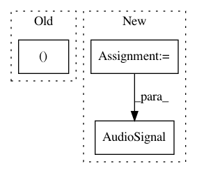

b0ef056df795288615339c98a4b878027271ded6,nussl/core/augmentation_utils.py,,apply_ffmpeg_filter,#Any#Any#Any#,46
Before Change
def apply_ffmpeg_filter(audio_signal, _filter, silent=True, **kwargs):
tmpfiles = []
with _close_temp_files(tmpfiles):
audio_tempfile, audio_tempfile_name = save_audio_signal_to_tempfile(audio_signal)
output_tempfile, output_tempfile_name = make_empty_audio_file()
tmpfiles.append(audio_tempfile)
tmpfiles.append(output_tempfile)
After Change
tmpfiles = []
with _close_temp_files(tmpfiles):
input_tempfile = tempfile.NamedTemporaryFile(suffix=".wav")
output_tempfile = tempfile.NamedTemporaryFile(suffix=".wav")
tmpfiles.append(input_tempfile)
tmpfiles.append(output_tempfile)
audio_signal.write_audio_to_file(input_tempfile)
if silent:
input_kwargs = {"loglevel": "quiet"}
else:
input_kwargs = {}
output = (ffmpeg
.input(input_tempfile.name, **input_kwargs)
.filter(_filter, **kwargs)
.output(output_tempfile.name)
.overwrite_output()
.run()
)
augmented_signal = AudioSignal(path_to_input_file=output_tempfile.name)
output_tempfile.close()
input_tempfile.close()
return augmented_signal
In pattern: SUPERPATTERN
Frequency: 3
Non-data size: 3
Instances
Project Name: interactiveaudiolab/nussl
Commit Name: b0ef056df795288615339c98a4b878027271ded6
Time: 2020-05-12
Author: abugler@gmail.com
File Name: nussl/core/augmentation_utils.py
Class Name:
Method Name: apply_ffmpeg_filter
Project Name: interactiveaudiolab/nussl
Commit Name: 53e6378f7d0d57a968165780db396baf40b4f974
Time: 2020-05-14
Author: abugler@gmail.com
File Name: nussl/core/augmentation_utils.py
Class Name:
Method Name: apply_ffmpeg_filter
Project Name: interactiveaudiolab/nussl
Commit Name: 38fee27b7122dcfcbfb950d169cd5b8b7e581135
Time: 2015-09-24
Author: eth@nmanilow.com
File Name: demo_repet_sim.py
Class Name:
Method Name: